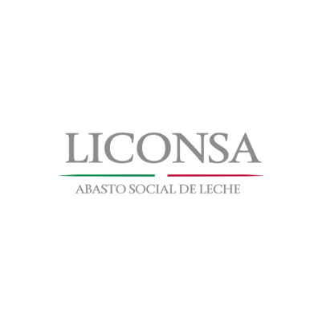

Los de Abajo 
Programas de Apoyo por parte del Gobierno mexicano
LICONSA
¿Qué hacen?
Liconsa, empresa de participación estatal mayoritaria, industrializa leche de elevada calidad y la
distribuye a precio subsidiado en apoyo a la nutrición de millones de mexicanos, especialmente de niños de
hasta 12 años, de familias en condiciones de pobreza, contribuyendo así a su adecuada incorporación al
desarrollo del país.
En forma complementaria lleva a cabo la adquisición de leche nacional en apoyo a la comercialización de
lácteo producido por ganaderos nacionales.
MISIÓN
En virtud de que somos una empresa del Gobierno Federal con responsabilidad social, conformada por capital
humano de excelencia, que industrializa y comercializa productos lácteos de la mejor calidad nutricional a
precio accesible, para contribuir a la alimentación y nutrición de las familias mexicanas, mejorar su
calidad de vida, apoyar a su desarrollo físico y mental y generar el crecimiento del capital humano que
necesitamos para el desarrollo de un país sano.
Nuestra Misión es:
TRABAJAR CON RESPONSABILIDAD SOCIAL PARA MEJORAR LA ALIMENTACIÓN DE LAS FAMILIAS MEXICANAS CON PRODUCTOS
LÁCTEOS DE LA MEJOR CALIDAD.
VISIÓN
Aspiramos ser la empresa líder de la industria láctea, integrada por hombres y mujeres comprometidos con los
valores institucionales, de vanguardia, sustentable, autofinanciable, competitiva, que atienda con una
elevada vocación de servicio a la población con productos de alta calidad nutricional y a precio accesible,
mejorando los procesos de captación, industrialización, distribución y comercialización.
Nuestra Visión es:
SER LA MEJOR EMPRESA DEL SECTOR LÁCTEO, QUE POR SU COMPETITIVIDAD, AUTOSUFICIENCIA Y ELEVADA VOCACIÓN DE
SERVICIO, CONTRIBUYA AL DESARROLLO DEL CAPITAL HUMANO.
OBJETIVOS ESTRATÉGICOS
Con base en lo establecido en el Decreto de Presupuesto de Egresos de la Federación para el Ejercicio Fiscal
2008 se dan a conocer los Objetivos Estratégicos de Liconsa.
Procesar y comercializar leche fortificada
* Asegurar una atención eficaz a la población objetivo del Programa de Abasto Social de Leche.
* Asegurar una transferencia de ingresos a la población beneficiaria del Programa de Abasto Social de
Leche.
* Garantizar la entrega de leche fortificada y de elevada calidad a los beneficiarios del mismo
programa.
Comprar leche a productores nacionales
* Promover la reducción gradual y parcial de las necesidades de importación de leche por Liconsa.
Operar la planta productiva y los servicios de apoyo administrativo
* Elevar la eficiencia en la operación de la planta productiva y mejorar los sistemas operativos,
administrativos y de control de la entidad

Programa de
Atención a Jornaleros Agrícolas
El Programa de Atención a Jornaleros Agrícolas ayuda a mejorar las condiciones de vida de la población
jornalera
agrícola y los integrantes de sus hogares con acciones que les permiten tener mejor alimentación, salud y
educación
El programa tiene cobertura a nivel nacional en lugares llamados Regiones de Atención Jornalera (RAJ),
apoyando
a este grupo en las localidades donde van a trabajar, así como durante sus trayectos.
Tipos y montos de apoyos
1. Apoyos directos a la Población Jornalera Agrícola en zonas de destino.
Para ser persona beneficiaria de los apoyos directos del programa, las y los solicitantes deben presentar su
Clave Única de Registro de Población y alguno de los siguientes documentos para cotejo:
Credencial para votar vigente.
Credencial del Instituto Nacional de las Personas Adultas Mayores (Inapam).
Constancia de identidad y edad con fotografía, expedida por la autoridad municipal (para localidades con
menos
de 10 mil habitantes).
Formas migratorias (para migrantes extranjeros que laboran en el país como jornaleros agrícolas), en este
caso,
no es necesario presentar la CURP.
a) Becas para la Permanencia en el Aula
Apoyo económico que va desde 400 hasta 650 pesos de acuerdo con el nivel escolar (preescolar, primaria o
secundaria), que cursen las hijas e hijos de los jornaleros agrícolas.
Para recibir este apoyo, las hijas e hijos de hogares jornaleros deben:
Tener menos de 18 años.
Estar inscritos en una escuela oficial de educación preescolar, primaria o secundaria.
b) Apoyo Económico al Arribo.
Apoyo económico de 1,150 pesos por hogar y hasta en tres ocasiones al año, que se otorga a la jefa o al jefe
del
hogar jornalero, que notifique su llegada en las mesas de atención del programa.
Para recibir este apoyo las y los jornaleros agrícolas necesitan:
Tener más de 16 años y ser integrante de un hogar jornalero agrícola.
Llegar a Unidades de Trabajo localizadas en Regiones de Atención Jornalera de destino.
Registrarse en Unidades de Trabajo dentro de la cobertura del Programa.
2. Acciones para el Desarrollo de la Población Jornalera Agrícola
Para tener acceso a estas acciones, la persona jornalera agrícola deberá acudir a las Unidades de Trabajo
donde
se proporcionen los servicios
a) Acciones para Potenciar el Desarrollo.
Se buscará que los integrantes del hogar jornalero accedan a apoyos o servicios que brindan otras
instituciones
y programas.
b) Apoyos Especiales para Contingencias.
El programa podrá destinar recursos para atender contingencias que afecten a la población jornalera,
otorgando:
Transportación de regreso a su lugar de origen.
Pago de servicios médicos y sanitarios.
Gastos funerarios
Este apoyo no sustituye las obligaciones del patrón respectivo si el accidente ocurre durante la jornada
laboral.
c) Apoyos Alimenticios a los Niñas y Niños.
Hasta 2 alimentos diarios para niñas y niños de 14 años de edad o menos, así como para mujeres embarazadas o
en
lactancia materna.
d) Apoyos para Servicios Básicos.
Subsidios para la construcción, rehabilitación, ampliación, acondicionamiento y equipamiento de vivienda para
atender a la población jornalera en las Subregiones de Atención Jornalera.
Se podrán ejecutar proyectos en los siguientes rubros:
Desarrollo infantil. Centros de atención y educación infantil, ludotecas y estancias, entre otros.
Atención a la salud. Unidades de atención médica de primer nivel fijas o móviles.
Espacios y mejoramiento para la estancia temporal en Unidades de Trabajo como las Unidades de Servicios
Integrales (USI) Albergues, vivienda temporal, entre otros.

Pensión
para el Bienestar de las Personas Adultas Mayores
Apoya de manera universal a mujeres y hombres mayores de 65 años en todo el país.
Objetivo
Contribuir al bienestar de las personas adultas mayores a través de la entrega de una pensión no contributiva
que ayude a mejorar las condiciones de vida y que a su vez permita el acceso a la protección social.
Requisitos
Persona solicitante adulta mayor:
1. Acta de nacimiento.
2. Documento de Identificación vigente:
Credencial para votar o
Pasaporte vigente o
Credencial del Instituto Nacional de las Personas Adultas Mayores (INAPAM)
u otros documentos que acrediten identidad expedidos por la autoridad correspondiente.
3. Clave Única de Registro de Población (CURP).
4. Comprobante de domicilio (máximo 6 meses de antigüedad) o constancia de residencia de la autoridad local.
Personas Adultas Auxiliares
Requisitos:
1. Documento de Identificación vigente:
Credencial para votar o
Pasaporte vigente o
Credencial del Instituto Nacional de las Personas Adultas Mayores (INAPAM)
u otros documentos que acrediten identidad expedidos por la autoridad correspondiente.
2. Clave Única de Registro de Población (CURP).
3. Comprobante de domicilio (máximo 6 meses de antigüedad) o constancia de residencia de la autoridad
local.
4. Documento que acredite el parentesco con la persona adulta mayor, de acuerdo con lo establecido en el
Formato
Único de Bienestar

Programa
de Estancias Infantiles para Apoyar a Madres Trabajadoras
Es un programa que apoya a las madres que trabajan, buscan empleo o estudian, así como a los padres solos con
hijas, hijos, niñas o niños bajo su cuidado
El Programa de Estancias Infantiles apoya hogares con al menos una niña, o un niño de entre 1 y hasta 3 años
11
meses de edad (un día antes de cumplir los 4 años), o entre 1 y hasta 5 años 11 meses de edad (un día antes
de
cumplir los 6 años) en casos de niños o niñas con alguna discapacidad, de acuerdo con lo siguiente: Madres,
padres solos, tutores o principales cuidadores que trabajan, buscan empleo o estudian, cuyo ingreso per
cápita
por hogar no rebasa la Línea de Bienestar (LB) y declaran que no tienen acceso a servicios de cuidado y
atención
infantil a través de instituciones públicas de seguridad social u otros medios.
El Gobierno de la República, a través de la Sedesol cubrirá el costo de los servicios de cuidado y atención
infantil, este apoyo se entregará directamente a la persona responsable.
Objetivos
General: Contribuir a dotar de esquemas de seguridad social que protejan el bienestar socioeconómico de la
población en situación de carencia o pobreza mediante el mejoramiento de las condiciones de acceso y
permanencia
en el mercado laboral de las madres, padres solos y tutores que buscan empleo, trabajan o estudian y acceden
a
los servicios de cuidado y atención infantil.
Específico: Mejorar las condiciones de acceso y permanencia en el mercado laboral de las madres, padres
solos y
tutores que trabajan, buscan empleo o estudian, mediante el acceso a los servicios de cuidado y atención
infantil, como un esquema de seguridad social.
Modalidad de Apoyo a Madres Trabajadoras y Padres Solos
En esta modalidad la población objetivo son las madres, padres solos y tutores que trabajan, buscan empleo o
estudian, cuyo ingreso per cápita estimado por hogar no rebasa la LB y declaran que no tienen acceso a
servicios
de cuidado y atención infantil a través de instituciones públicas de seguridad social u otros medios, y que
tienen bajo su cuidado al menos a una niña o niño de entre 1 y hasta 3 años 11 meses de edad (un día antes
de
cumplir los 4 años), o entre 1 y hasta 5 años 11 meses de edad (un día antes de cumplir los 6 años), en
casos de
niñas o niños con alguna discapacidad.
Los criterios de elegibilidad de la población objetivo en la modalidad de Apoyo, establecidos en las Reglas
de
Operación, no serán retroactivos para aquellas personas beneficiarias que hubiesen solicitado su
incorporación
al Programa en dicha modalidad antes del 31 de diciembre de 2016.
Montos
El Gobierno Federal, por conducto de la Sedesol cubrirá el costo de los servicios de cuidado y atención
infantil
de la siguiente forma:
$900 pesos mensuales por cada niña o niño de entre 1 a 3 años 11 meses de edad (un día antes de cumplir los
4
años), inscrita(o) en alguna Estancia Infantil afiliada al Programa que cuente con Autorización del Modelo,
y
$1,800 pesos mensuales por cada niña o niño de entre 1 a 5 años 11 meses de edad (un día antes de cumplir
los 6
años) en los casos de niñas(os) con alguna discapacidad que cuente con certificado médico vigente,
inscrita(o)
en alguna Estancia Infantil afiliada al Programa que cuente con Autorización del Modelo.
Modalidad de Impulso a los Servicios de Cuidado y Atención Infantil
En esta modalidad la población objetivo son las personas físicas o personas morales, que deseen establecer y
operar una Estancia Infantil, o que cuenten con espacios en los que se brinde o pretenda brindar el servicio
de
cuidado y atención infantil para la población objetivo del Programa en la modalidad de Apoyo a Madres
Trabajadoras y Padres Solos, conforme a los criterios y requisitos establecidos en las presentes Reglas de
Operación y sus Anexos. Para el apoyo otorgado en el numeral 3.5.2. de las Reglas de Operación, las personas
beneficiarias serán las personas Responsables de las Estancias Infantiles afiliadas al Programa.
Para efecto de identificar y cuantificar a la población objetivo del Programa que se encuentra dentro de los
6.1
millones de personas en situación de pobreza alimentaria extrema que es la población objetivo y potencial de
la
estrategia de política social, integral y participativa de la Cruzada contra el Hambre, se deberán cumplir
los
criterios establecidos por el Consejo Nacional de Evaluación de la Política de Desarrollo Social y una vez
identificadas dichas características, se dará atención preferente a ese conjunto de personas.
Estancias infantiles afiliadas
Es un espacio dedicado al cuidado y atención infantil operado por una persona que funge como responsable,
esta
persona se encuentra capacitada por el DIF Nacional y la Sedesol. Cada estancia infantil afiliada al
Programa
cuenta con asistentes de acuerdo al número de niñas y niños que se atienden. Éstas se encuentran abiertas al
público en general pero principalmente a la población beneficiaria de este Programa.
¿Cómo puedo afiliarme en la modalidad de impulso a los servicios de cuidado y atención infantil?
Las personas físicas o morales, que deseen establecer y operar una Estancia Infantil o que cuenten con
espacios
en los que se brinde o pretenda brindar el servicio de cuidado y atención infantil para atender a la
población
objetivo del Programa en la modalidad de Apoyo, podrán solicitar a la Delegación de la SEDESOL
correspondiente
su afiliación al Programa. Asimismo, podrán recibir un Apoyo inicial de hasta $70,000 pesos, que deberán
utilizar para lo siguiente:
Adecuación, compra de mobiliario y equipo para el espacio validado que operará como Estancia Infantil, de
acuerdo con lo indicado en las presentes Reglas de Operación, Anexo A y Oficio de Aprobación.
Póliza de Seguro de Responsabilidad Civil y Daños a Terceros vigente de acuerdo con lo establecido en el
numeral
3.5.6. de las presentes Reglas de Operación.
Gastos relacionados con la elaboración de un Programa Interno de Protección Civil o documento equivalente
reconocido por la autoridad local, el cual deberá contar con el Visto Bueno y/o estar validado por la
autoridad
competente en materia de Protección Civil Estatal o Municipal, del inmueble que se proponga para operar como
Estancia Infantil, conforme a la normatividad local correspondiente.
No podrán ser cubiertos con el apoyo inicial los gastos derivados de otros trámites administrativos.
Transparencia
(cifras al cierre de diciembre de 2018*)
Estancias en operación: 9,566
Niños y niñas atendidos(as): 329,821
Beneficiarios(as) atendidos(as): 313,550

Programa de Empleo
Temporal
Contribuye al bienestar de hombres y mujeres que enfrentan una reducción de sus ingresos y de la población
afectada por emergencias.
El Programa de Empleo Temporal (PET) contribuye al bienestar de hombres y mujeres que enfrentan una
reducción de
sus ingresos, y de la población afectada por emergencias mediante apoyos económicos temporales por su
participación en proyectos de beneficio familiar o comunitario, otorgando un apoyo económico consistente en
jornales equivalentes al 99% de un salario mínimo general diario vigente.
Objetivo
Mitigar el impacto económico y social de las personas de 16 años de edad o más que vean disminuidos sus
ingresos
o su patrimonio ocasionado por situaciones sociales y económicas adversas, emergencias o desastres.
Cobertura
El Programa opera a nivel nacional.
Requisitos:
a) Para las y los solicitantes de apoyo económico que deseen incorporarse a un proyecto ya existente:
1. Documento vigente que acredite tener 16 años o más. Original y Copia
Clave Única de Registro de Población (CURP).
Acta de nacimiento
Credencial para votar (vigente).
Cartilla del Servicio Militar Nacional.
Pasaporte (vigente).
Credencial del Instituto Nacional de las Personas Adultas Mayores (Inapam).
Cédula Profesional.
Nota: La presentación de la CURP es obligatoria, en caso de no contar con CURP se presentará el formato
disponible aquí.
2. Solicitud de apoyo en escrito libre que contenga:
Lugar, fecha y nombre completo de la o las personas solicitantes
Manifestación de estar de acuerdo en asumir su corresponsabilidad dentro del desarrollo de un proyecto
Firma o huella dactilar de las personas solicitantes
3. Carta constancia bajo protesta de decir verdad de que la persona beneficiaria no se encuentra
participando
simultáneamente en más de un proyecto del PET y que no ha recibido más de 132 jornales por su trabajo en el
Programa de Empleo Temporal en el ejercicio fiscal en conjunto en las tres Dependencias, ni desempeña labor
de
gestora o gestor voluntario en la SEDESOL o SEMARNAT. (se puede presentar en escrito libre o mediante este
formato)
4. Constancia de domicilio o carta de residencia
Para determinar si las personas cumplen los criterios de elegibilidad, será necesario que un informante
otorgue
los datos necesarios para el llenado del Cuestionario Único de Información Socioeconómica (CUIS) y el
Cuestionario Complementario (CC).
b) Para los solicitantes de apoyo económico que presenten un proyecto nuevo.
1. Presentar en original y copia un escrito libre para la ejecución de un proyecto del Programa de Empleo
Temporal que deberá contener como mínimo:
Nombre del municipio y de la localidad en donde se propone la ejecución del proyecto.
Descripción breve del proyecto que se planea realizar
Nombre completo de la o el interesado o persona que acuda en representación de las y los solicitantes del
proyecto y su firma o huella dactilar, en su caso.
Así como original y copia de lo siguiente:
2. Acta del comité comunitario donde se manifiesta la conformidad de la comunidad con el proyecto
propuesto
3. Proyecto ejecutivo (sólo si se trata de construcción de infraestructura)
4. Programa calendarizado de Trabajo
5. Croquis de localización de la obra
6. Presupuesto total del proyecto detallado por concepto de obra o acción, metas a alcanzar (jornales,
beneficiarios –hombres y mujeres-)
7. Fotografías del estado actual de la obra
8. Cuando el ejecutor sea una organización de la sociedad civil, adicionalmente deberán presentar:
En escrito libre señalar: nombre, RFC, teléfono, domicilio y correo electrónico para recibir notificaciones
Manifestación por escrito de que no se encuentran en los supuestos del artículo 8 de la Ley Federal de
Fomento a
las Actividades Realizadas por Organizaciones de la Sociedad Civil, que el proyecto, obra o acción, está
vinculado directamente con el objeto social de la organización
Entregar copia y presentar original para su cotejo de lo siguiente:
o Acta Constitutiva
o CLUNI
o Cédula de identificación fiscal
o Identificación oficial de la o él representante legal
o Comprobante de domicilio
o Formulario de registro ante la SHCP
o Estado de cuenta y contrato de apertura bancario en los que se especifique la CLABE interbancaria.
o Carta de cumplimiento de obligaciones fiscales en escrito libre
o Curriculum
o Carta manifestando que no presenta irregularidades con la SEDESOL u otra instancia federal
Deberán reportar a la autoridad competente todas las obligaciones que señala la Ley Federal de Fomento a las
Actividades Realizadas por Organizaciones de la Sociedad Civil y su Reglamento tales como informes de
actividades, recursos recibidos y situación financiera, entre otras.
9. Respecto de cada beneficiario un informante deberá otorgar los datos necesarios para el llenado del
Cuestionario Único de Información Socioeconómica (CUIS) y el Cuestionario Complementario (CC).
Para el caso de los
Proyectos a presentar ante la SCT y SEMARNAT
, se pueden consultar los requisitos en las
páginas de cada secretaría: SCT y SEMARNAT
Los formatos necesarios para las solicitudes se pueden encontrar en los Lineamientos Operativos del Programa
de
Empleo Temporal para la SEDESOL.
Prospera y
Seguro de Vida Jefas de Familia
El Programa busca garantizar que las niñas, niños, adolescentes y jóvenes en situación de orfandad materna
cuente con los recursos económicos para continuar con sus estudios, y contribuir en la promoción, protección
y
respeto irrestricto de sus derechos humanos y sociales.
Priorizando a las personas que habiten en las zonas de población mayoritariamente indígena, zonas con alto o
muy
alto grado de marginación o zonas con altos índices de violencia.
El objetivo del Programa es incentivar el ingreso o permanencia de niñas, niños, adolescentes y jóvenes en
orfandad materna de hasta 23 años de edad en el sistema escolar, mediante la entrega de un apoyo directo.
Operación 2021:
El PSVJF estuvo operando bajo ese nombre hasta el 2020, sin embargo, en el presente año fiscal pasa a forma
parte del Programa para el Bienestar de Niñas y Niños, Hijos de Madres Trabajadoras, tal y como se establece
en
las Reglas de Operación 2021 que en su CUARTO transitorio, que dice: el 02 de abril de 2020, se publicó en
el
Diario Oficial de la Federación el Decreto por el que se ordena la extinción o terminación de los
fideicomisos
públicos, mandatos públicos y análogos, donde se encuentra contemplado el fideicomiso del Programa Seguro de
Vida para Jefas de Familia, por lo que, a fin de dar continuidad a los derechos de las niñas, niños,
adolescentes y jóvenes en orfandad materna inscritos en dicho Programa, se implementó la modalidad B, en
estas
Reglas de Operación.
En consecuencia, los Programas de Apoyo para el Bienestar de las Niñas y Niños, Hijos de Madres
Trabajadoras, y
el de Seguro de Vida para Jefas de Familia, a partir del ejercicio fiscal 2021, se denominará
"Programa de Apoyo
para el Bienestar de las Niñas y Niños Hijos de Madres Trabajadoras ”.
Las niñas, niños, adolescentes y jóvenes en orfandad materna que al 31 de diciembre de 2020 eran
beneficiarias
del Programa Seguro de Vida para Jefas de Familia continuarán formando parte del Padrón de Beneficiarios
2021,
siempre y cuando cumplan con los criterios y requisitos establecidos en las Reglas de Operación referidas.
Gobierno garante de derechos:
La falta de bienestar se manifiesta con el incumplimiento de la efectividad de los derechos humanos y
sociales,
midiéndolo mediante el avance o retroceso en el bienestar de las personas y no únicamente en el crecimiento
económico de un país. Por lo anterior, en esta nueva etapa de la vida nacional, el Estado evoluciona a ser un
gobierno garante de derechos, no solo un gestor de oportunidades.
En congruencia con esta visión el
Programa Seguro de Vida para Jefas de Familia, contribuye en la
construcción
del bienestar, otorgando un apoyo que incentive el ingreso o permanencia en el Sistema Escolar y, coadyuvar en
la Promoción, Protección, Respeto y Garantía de sus Derechos Humanos y Sociales que beneficie a las niñas,
niños, jóvenes y adolescentes en situación de orfandad, fomentando un desarrollo integral, educativo, armónico,
amoroso y de protección, con alcance nacional en las 32 entidades federativas.
Para lograr lo anterior, el Programa ejecuta acciones de promoción para dar a conocer los Derechos Humanos de
las niñas y niños, mediante el “Cuadernillo por tus Derechos”, y con el propósito de verificar fehacientemente
que los derechos elementales de las y los menores en orfandad sean garantizados, respetados y se encuentren
protegidos, implemento el levantamiento de la "Cédula de Seguimiento a los Derechos de las Niñas, Niños y
Adolescentes".
El programa tendrá cobertura nacional y otorgará un apoyo económico a:
Las niñas, niños, adolescentes y jóvenes en condición de orfandad materna, menores a 23 años de edad, que se
encuentren estudiando en el sistema educativo nacional, presentando la siguiente documentación:
El monto de apoyo económico que recibirán las niñas, niños, adolescentes y jóvenes serán entregados
bimestralmente de manera directa –sin intermediarios-, de acuerdo al nivel escolar:
| Nivel Educativo |
Monto Mensual |
| De recién nacido hasta preescolar |
$ 360.00 |
| Primaria |
$ 600.00 |
| Secundaria |
$ 845.00 |
| Media superior |
$ 1,090.00 |
| Superior |
$ 1,200.00 |
Requisitos:
Llenar el formato de Solicitud de Incorporación.
Identificación oficial de la Persona Responsable de las niñas, niños y jóvenes en orfandad.
Acta certificada de defunción de la jefa de familia, de no mayor a tres meses de antigüedad.
Acta de nacimiento de cada una de las niñas, niños y jóvenes en orfandad.
Clave Única de Registro de Población (CURP), tanto de la persona responsable como de cada una de las niñas,
niños y jóvenes en orfandad.
Comprobante de domicilio de no más de tres meses de antigüedad.
La persona responsable debe firmar carta responsiva en formato libre.
Constancia vigente de estudios de cada una de las niñas, niños y jóvenes menores de 23 años.
Compromisos de las niñas, niños y jóvenes en orfandad
Las niñas, niños y jóvenes en orfandad en edad escolar registradas en el Programa, con la finalidad de
continuar
recibiendo los apoyos deberán:
Permanecer inscritos y entregar documentación oficial que acredite su permanencia o inscripción al Sistema
Nacional de Educación con sello oficial de la escuela y firma del responsable de expedirla; y
Conceder la visita de personal de la Secretaría de Bienestar, con el propósito de entrevistar a las niñas,
niños, jóvenes y adolescentes para realizar el llenado de la Cédula de Seguimiento a los Derechos de las
Niñas,
Niños y Adolescentes, en el caso de ser menores de edad estos, deberán estar acompañados de la persona
responsable de su cuidado y atención.
Se fomentará que las y los servidores públicos involucrados en la operación del Programa, promuevan,
respeten,
protejan y garanticen el ejercicio efectivo de los derechos humanos de los sujetos de derecho, es decir
de las
niñas, niños, adolescentes y jóvenes, de conformidad con los principios de universalidad,
interdependencia,
indivisibilidad y progresividad, brindando en todo momento un trato digno y de respeto a la población
objetivo,
con apego a los criterios de igualdad y no discriminación.